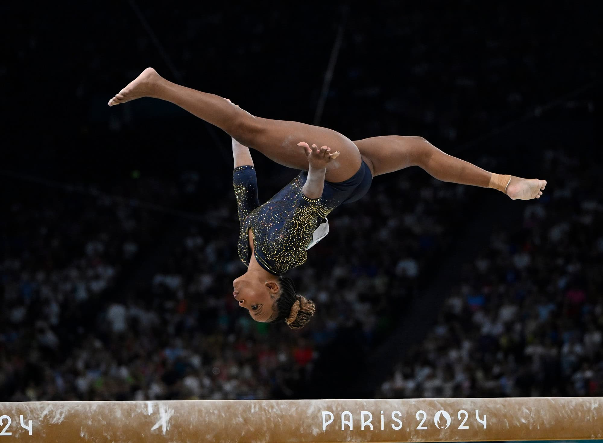

Destaques da Rebeca Andrade

Durante as Olimpíadas de Paris 2024, Rebeca Andrade impressionou com sua técnica e a execução de saltos desafiadores. No solo, apresentou uma rotina complexa que incluía saltos duplos e piruetas, destacando-se com o double pike, que exigiu grande controle na aterrissagem. No salto, ela utilizou o Yurchenko double pike, um movimento de alta dificuldade que impressionou juízes e torcedores. Sua capacidade de conectar movimentos fluidos e artísticos no individual geral também foi notável, mostrando não apenas técnica, mas também emoção nas performances. Esses saltos e passos ressaltaram seu treinamento rigoroso e dedicação, consolidando sua posição como uma das melhores ginastas do mundo.
Talento
Rebeca Andrade é uma ginasta artística brasileira reconhecida por seu talento excepcional e habilidades técnicas. Desde jovem, destacou-se em competições nacionais e internacionais, combinando força, agilidade e graça em suas apresentações. Sua capacidade de realizar movimentos complexos com precisão, além de sua expressão artística, a tornaram uma das principais ginastas do mundo. Rebeca também se destaca por sua resiliência e determinação, inspirando muitos com suas conquistas, incluindo medalhas em campeonatos mundiais e Olimpíadas.
Desempenho ao longo da carreira
Rebeca Andrade teve um desempenho notável em sua carreira na ginástica artística, destacando-se desde as competições nacionais. Nos Jogos Pan-Americanos de 2019, conquistou várias medalhas, incluindo ouro no individual geral, e em 2021, nas Olimpíadas de Tóquio, fez história ao ganhar uma medalha de ouro no salto e uma de prata no individual geral, tornando-se a primeira ginasta brasileira a conquistar um ouro olímpico. Nas Olimpíadas de Paris 2024, Rebeca superou suas próprias conquistas, trazendo para casa quatro medalhas: uma de ouro, duas de prata e uma de bronze, o que a consolidou como a maior medalhista brasileira da história olímpica. Sua participação em campeonatos mundiais também rendeu medalhas, demonstrando sua consistência e habilidade de lidar com a pressão em grandes eventos. Rebeca continua a treinar e competir, sempre buscando novas conquistas e elevando o nível da ginástica no Brasil.